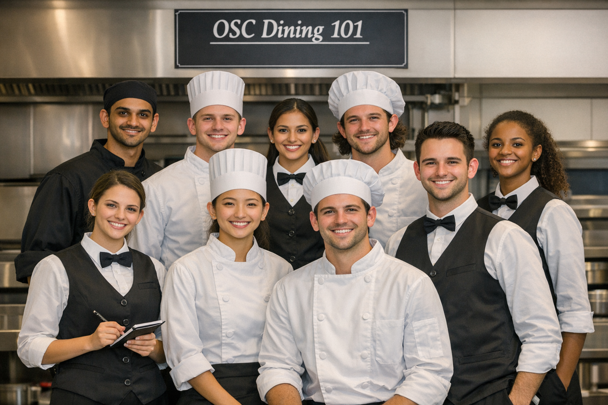
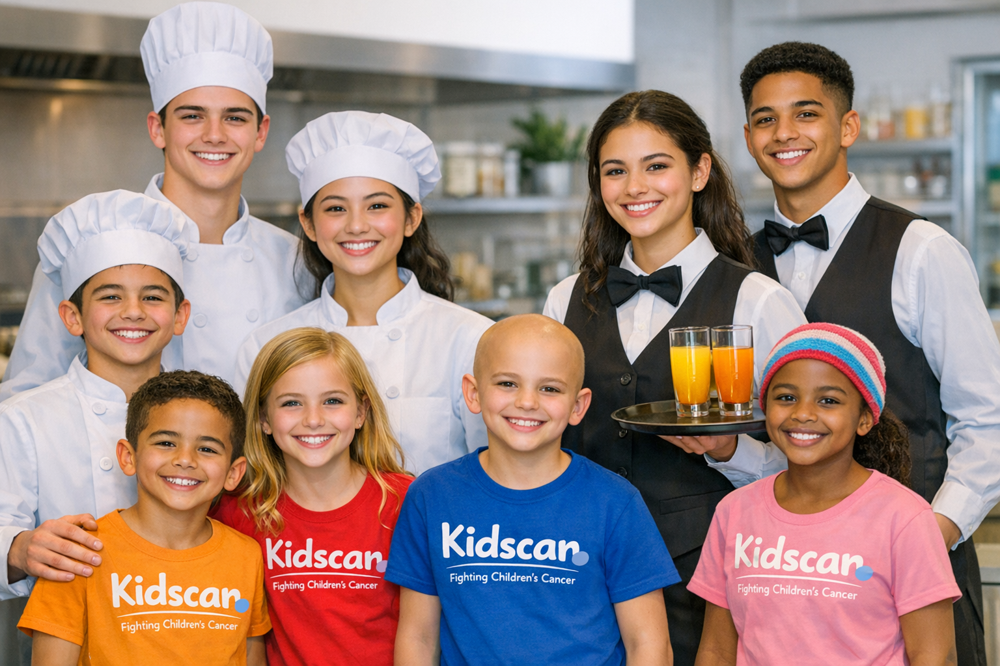

At OSC Dining 101, we are passionate about providing an exceptional dining experience that combines culinary excellence with warm hospitality. Our mission is to create a welcoming environment where guests can indulge in delicious food, crafted with the finest ingredients and served with care. We believe that dining is not just about nourishment but also about creating memorable moments and fostering connections. Whether you're joining us for a casual meal or a special occasion, we strive to exceed your expectations and make every visit a delightful journey of flavors and hospitality.


The purpose of OSC Dining 101 is to provide hospitality students with practical experience in running a restaurant. By transforming the school cafeteria into a fully operational restaurant once a term, students gain hands-on experience in food preparation, front-of-house services, and overall restaurant management. Although we are a restaurant dealing with real money and payments, all profits will go to KidsCan. KidsCan is a charitable organization dedicated to improving the lives of children in need by providing the essentials to Kiwi kids in hardship: nutritious food, warm clothing, sturdy shoes, and headlice treatment, so they can focus on learning and living.